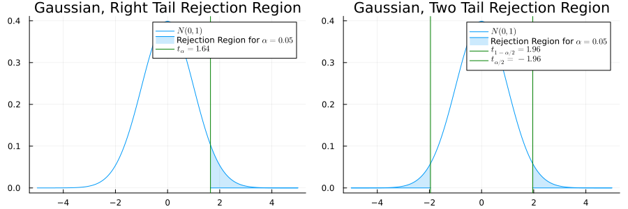

Hypothesis Testing
One Gaussian Population
Testing Mean with Known variance
- \(X = (X_1, \dots, X_n)\), iid with distribution \(\mathcal N(\mu, \sigma)\).
Test Problems
\[ \begin{aligned} H_0: \mu = \mu_0 ~~~~ &\text{ or } ~~~ H_1: \mu > \mu_0 ~~~ \text{(One-Sided Right)}\\ H_0: \mu = \mu_0 ~~~ &\text{ or } ~~~ H_1: \mu < \mu_0 ~~~ \text{(One-Sided Left)}\\ H_0: \mu = \mu_0 ~~~ &\text{ or } ~~~ H_1: \mu \neq \mu_0 ~~~ \text{(Two-Sided)}\\ \end{aligned} \]
- Test Statistic: \[ \psi(X) = \frac{\sqrt{n}(\overline X-\mu_0)}{\sigma} \; .\]
- \(\psi(X) \sim \mathcal N(0,1)\)
Tests
\[ \begin{aligned} \frac{\sqrt{n}(\overline X-\mu_0)}{\sigma} > t_{1-\alpha} ~~~ \text{(One-Sided Right)}\\ \frac{\sqrt{n}(\overline X-\mu_0)}{\sigma} < t_{\alpha} ~~~ \text{( One-Sided Left)}\\ \left|\frac{\sqrt{n}(\overline X-\mu_0)}{\sigma}\right| > t_{1-\tfrac{\alpha}{2}}~~~ \text{(Two-Sided)}\\ \end{aligned} \]

Why 0.05 and 1.96 ?
Fisher’s Quote
The value for which \(p=0.05\), or 1 in 20, is 1.96 or nearly 2 ; it is convenient to take this point as a limit in judging whether a deviation is to be considered significant or not.
Testing Mean with Unknown Variance
Multiple VS Multiple Test Problem: \[ H_0: \{\mu_0,\sigma > 0\} \text{ or } H_1: \{\mu \neq \mu_0,\sigma > 0\} \;. \]
\(\psi(X) = \frac{\sqrt{n}(\overline X-\mu_0)}{\sigma}\) no longer test statistic.
Idea: replace \(\sigma\) by its estimator \[ \hat \sigma(X) = \sqrt{\frac{1}{n-1}\sum_{i=1}^n(X_i - \overline X)^2} \; .\]
This gives \[ \psi(X) = \frac{\sqrt{n}(\overline X-\mu_0)}{\hat \sigma} \; . \]
Chi-Square and Student Distributions
Chi-Squared Distribution \(\chi^2(k)\)
- \(k\): degree of freedom
- Distrib of \(\sum_{i=1}^k Z_i^2\)
- where the \(Z_i\)’s are iid \(\mathcal N(0,1)\).
- \(\mathbb E[Z_i^4] - \mathbb E[Z_i^2]=2\)
- \(\chi^2(k) \sim k + \sqrt{2k}\mathcal N(0,1)\) when \(k \to +\infty\)
Student Distribution \(\mathcal T(k)\)
- \(k\): degree of freedom
- Distrib of \(\tfrac{Z}{\sqrt{U/k}}\)
- \(Z\), \(U\) are independent and follow resp. \(\mathcal N(0,1)\) and a \(\chi^2(k)\)
Theorem
Assume \(X_i\) are iid \(\mathcal N(\mu_0, \sigma)\).
- The Test Statistic \(\psi(X) = \frac{\sqrt{n}(\overline X-\mu_0)}{\hat \sigma}\) pivotal (indep. of \(\sigma\)).
- It follows a Student Distribution \(\mathcal T(n-1)\).
- Proof idea: \(\overline X \cdot (1, \dots, 1)\) and \((X_1 - \overline X, \dots, X_n - \overline X)\) are orthogonal in \(\mathbb R^n\).
T-Test
Multiple VS Multiple Test Problem \(X=(X_1, \dots, X_n)\): \[ H_0: \{\mu_0,\sigma > 0\} \text{ or } H_1: \{\mu \neq \mu_0,\sigma > 0\} \;. \]
(Student) T-Test Statistic: \[\psi(X) = \frac{\sqrt{n}(\overline X-\mu_0)}{\hat \sigma(X)} \sim \mathcal T(n-1)\]

Two Gaussian Populations
Testing Means, Known Variances
We observe \((X_1, \dots, X_{n_1})\) iid \(\mathcal N(\mu_1, \sigma_1^2)\) and \((Y_1, \dots, Y_{n_2})\) iid \(\mathcal N(\mu_1, \sigma_1^2)\).
\(\sigma_1\), \(\sigma_2\) are known, \(\mu_1\), \(\mu_2\) are unknown
Test Problem: \(H_0: \mu_1 = \mu_2 ~~~\text{or} ~~~H_1: \mu_1 \neq \mu_2\)
Idea: Normalize \(\overline X - \overline Y\): \[ \psi(X,Y)=\frac{\overline X - \overline Y}{\sqrt{\frac{\sigma_1^2}{n_1} + \frac{\sigma_2^2}{n_2}}} \]
Two-Sided Test for Testing Variance: \[ T(X,Y)=\left|\frac{\overline X - \overline Y}{\sqrt{\frac{\sigma_1^2}{n_1} + \frac{\sigma_2^2}{n_2}}}\right| \geq t_{1-\alpha/2} \; , \]
\(t_{1-\alpha/2}\) is the \((1-\alpha/2)\)-quantile of a Gaussian Distrb
Testing Variances, Unknown Means
- We observe \((X_1, \dots, X_{n_1})\) iid \(\mathcal N(\mu_1, \sigma_1)\) and \((Y_1, \dots, Y_{n_2})\) iid \(\mathcal N(\mu_2, \sigma_2)\).
- \(\sigma_1\), \(\sigma_2\), \(\mu_1\), \(\mu_2\) are unknown
- Variance Testing Problem: \[ H_0: \sigma_1 = \sigma_2 ~~~~ \text{ or } ~~~~ H_1: \sigma_1 \neq \sigma_2 \]
- F-Test Statistic of the Variances (ANOVA) \[ \frac{\hat \sigma^2_1}{\hat \sigma_2^2} = \frac{\tfrac{1}{n_1-1}\sum_{i=1}^{n_1}(X_i-\overline X)^2}{\tfrac{1}{n_2-1}\sum_{i=1}^{n_2}(Y_i-\overline Y)^2}\; . \]
Fisher Distribution
Fisher Distribution \(\mathcal F(k_1,k_2)\)
- \((k_1, k_2)\): degrees of freedom
- Distribution of \(\frac{U_1/k_1}{U_2/k_2}\)
- Where \(U_1\), \(U_2\) are indep. and follow \(\chi^2(k_1)\), \(\chi^2(k_2)\). wiki
- \(\mathcal F(k_1,k_2) \approx 1 + \sqrt{\frac{2}{k_1} + \frac{2}{k_2}}\mathcal N\left(0, 1\right)\) when \(k_1,k_2 \to +\infty\)
- Example: \(\frac{Z_1^2+Z_2^2}{2Z_3^2} \sim \mathcal F(2,1)\) if \(Z_i \sim \mathcal N(0,1)\)
Proposition
- \(\psi(X,Y)=\frac{\hat \sigma^2_1}{\hat \sigma_2^2}\) is independent of \(\mu_1\), \(\mu_2\), \(\sigma_1\), \(\sigma_2\). It is pivotal
- It follow distribution \(\mathcal F(n_1-1, n_2-1)\)

- Two-Sided Test: \[ \frac{\hat \sigma^2_1}{\hat \sigma_2^2} \not \in [t_{\alpha/2}, t_{1-\alpha/2}] ~~~\text{(quantile of Fisher)}\]
Equality Means, Equal Variances
- We observe \((X_1, \dots, X_{n_1})\) iid \(\mathcal N(\mu_1, \sigma_1)\) and \((Y_1, \dots, Y_{n_2})\) iid \(\mathcal N(\mu_2, \sigma_2)\).
- \(\sigma_1\), \(\sigma_2\), \(\mu_1\), \(\mu_2\) are unknown, but we know that \(\sigma_1=\sigma_2\)
- Equality of Mean Testing Problem: \[ H_0: \mu_1 = \mu_2 ~~~~ \text{ or } ~~~~ H_1: \mu_1 \neq \mu_2 \]
- Formally, \(H_0 = \{(\mu,\sigma, \mu, \sigma), \mu \in \mathbb R, \sigma > 0\}\).
- Estimate \(\sigma\): \(\hat \sigma^2 = \frac{1}{n_1 + n_2 - 2}\left(\sum_{i=1}^{n_1}(X_i - \overline X)^2 + \sum_{i=1}^{n_2}(Y_i - \overline Y)^2 \right)\)
- Normalize \(\overline X - \overline Y\) to get the T-Statistic: \(\psi(X,Y) = \frac{\overline X - \overline Y}{\sqrt{\hat \sigma^2\left(\frac{1}{n_1} + \frac{1}{n_2}\right)}} \; .\)
- \(\psi(X,Y)\) is pivotal because \(\sigma_1 = \sigma_2\).
Equality Means, Unequal Variances
We observe \((X_1, \dots, X_{n_1})\) iid \(\mathcal N(\mu_1, \sigma_1)\) and \((Y_1, \dots, Y_{n_2})\) iid \(\mathcal N(\mu_2, \sigma_2)\).
\(\sigma_1\), \(\sigma_2\), \(\mu_1\), \(\mu_2\) are unknown
Equality of Mean Testing Problem: \[ H_0: \mu_1 = \mu_2 ~~~~ \text{ or } ~~~~ H_1: \mu_1 \neq \mu_2 \]
Formally, \(H_0 = \{(\mu,\sigma_1, \mu, \sigma_2), \mu \in \mathbb R, \sigma_1, \sigma_2 > 0\}\).
Test Statistic: \(\psi(X, Y) = \frac{\overline X - \overline Y}{\sqrt{\frac{\hat \sigma_1^2}{n_1} + \frac{\hat \sigma_2^2}{n_2}}}\)
\(\psi(X,Y)\) is not pivotal
Gaussian approximation: \(\psi(X,Y) \approx \mathcal N(0,1)\) when \(n_1, n_2 \to \infty\)
Better approximation: Student Welch
Asymptotic Approximations
Central Limit Theorem
CLT
- Let \(S_n = \sum_{i=1}^n\) with \((X_1, \dots, X_n)\) iid (\(L^2\)) then \[ \frac{S_n - \mathbb E[S_n]}{\sqrt{\mathrm{Var}(S_n)}} \approx \mathcal N(0,1) \text{ when $n \to \infty$} \]
- Equality when \(X_i\)’s are \(\mathcal N(\mu, \sigma)\)
- Rule of thumb: \(n \geq 30\)
Example: Binomials
- If \(p \in (0,1)\)
- \(\frac{\mathrm{Bin}(n,p) - np}{\sqrt{np(1-p)}} \approx \mathcal N(0,1)\) when \(n \to \infty\)
- \(n\) should be \(\gg \frac{1}{p}\)
Good Approx for (\(n=100\), \(p=0.2\))

Bad Approx for (\(n=100\), \(p=0.01\)) 
Proportion Test
We observe \(Bin(n_1, p_1)\) and \(Bin(n_2, p_2)\).
\(n_1\), \(n_2\) are known but \(p_1\), \(p_2\) are unknown in \((0,1)\)
\(H_0\): \(p_1 = p_2\) or \(H_1\): \(p_1 \neq p_2\)
Question: “Should we raise taxes on cigarettes to pay for a healthcare reform ?”
| Non-Smokers | Smokers | Total | |
|---|---|---|---|
| YES | 351 | 41 | 392 |
| NO | 254 | 195 | 449 |
| Total | 605 | 154 | 800 |
abc